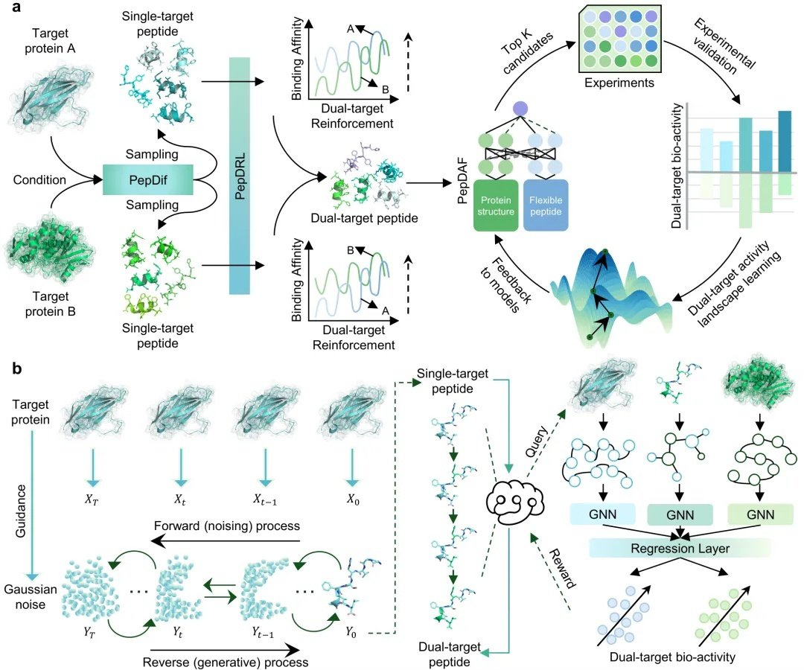

新闻 · 2026-11-27 08:00
腾讯用 AI 挑战药物研发领域前沿难题：成果登 Nature，在减重降糖、肿瘤免疫方向完成验证
腾讯生命科学实验室利用AI平台ORIDTP，首次实现从零设计高活性双靶点治疗性多肽，成果登《Nature》主刊。该平台结合扩散生成模型与强化学习，每轮实验仅需测试约15条多肽，在减重降糖和肿瘤免疫方向完成验证：肥胖糖尿病小鼠模型中以低剂量显著减重控糖，肿瘤模型中使肿瘤体积减少94.2%。研究现处临床前阶段，已部署至腾讯健康BioNexus平台开放使用。

来源与核验
单一信源报道，未交叉核实